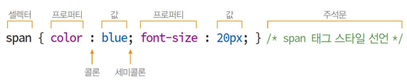
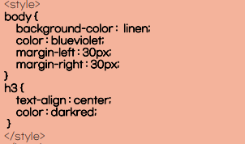
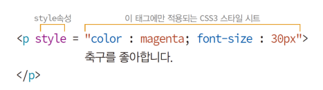
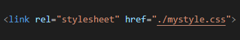
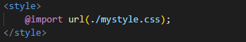

HTML 문서의 색이나 모양 등 외관을 꾸미는 언어
CSS로 작성된 코드를 '스타일 시트'라고 부른다
CSS의 기능: 색상과 배경, 폰트, 박스모델, 리스트, 테이블 등
CSS3 스타일 시트 구성
span 태그의 텍스트를 20픽셀 blue로 출력하는 예

셀렉터: CSS3 스타일 시트를 HTML 페이지에 적용하도록 만든 이름
프로퍼티: 스타일 속성 이름
값: 프로퍼티의 값
주석문: 설명문이며, 여러 줄, 아무 위치에서나 사용 가능
대소문자 구분이 없다
style 태그는 head 태그 내에서 사용
style 태그는 여러 번 작성 가능(스타일 시트들이 합쳐 사용)
style 태그에 작성된 스타일 시트는 웹페이지 전체에 적용
HTML문서에 CSS3 스타일 시트 만드는 법 3가지
style 태그에 스타일 시트 작성
style 속성에 스타일 시트 작성
스타일 시트를 별도 파일로 작성(link 태그나 @import로 불러 사용)
1.style 태그에 스타일 시트 작성

2.style 속성에 스타일 시트 작성

※해당 태그에만 스타일 적용, 1보다 우선순위 높음
3.스타일 시트를 별도 파일로 작성
link 태그로 CSS3 파일 불러오기

또는

소연재
저는 체조 선수 소연재입니다. 음악을 들으면서 책읽기를 좋아합니다.
김치찌개와 막국수를 무척 좋아합니다.
CSS3 규칙 - 스타일 합치기와 오버라이딩
태그에 적용 가능한 스타일
(1에서 4로 갈수록 우선순위가 높다)
브라우저의 디폴트 스타일(아무것도 적용 안함)
스타일 시트 파일에 선언된 스타일(외부에서 가져오는 css 파일)
style 태그에 선언된 스타일(head 태그안의 style 태그안에 작성된 것)
style 속성에 선언된 스타일(우선 순위가 가장 높은 것)
이렇게 우선순위가 높은 것이 작성될 때마다,
스타일 합치기와 오버라이딩이 발생하게된다.
셀렉터
HTML 태그의 모양을 꾸밀 스타일 시트를 선택하는 기능
태그 이름 셀렉터
태그 이름이 셀렉터로 사용되는 유형
셀렉터와 같은 이름의 모든 태그에 CSS3 스타일 시트 적용
여러개의 태그에 적용하고 싶다면 쉼표로 구분하여 작성
h1, h2 {
color: red;
}
class 셀렉터
점(.)으로 시작하는 이름의 셀렉터
class 속성이 같은 모든 태그에 적용
.myclass {
color: yellow;
}
<h3 class="myclass">태그에만 적용시키는 것도 가능
h3.myclass {
color: green;
}
id 셀렉터
#으로 시작하는 이름의 셀렉터
id 속성이 같은 모든 태그에 적용
#myid {
color: blue;
}
class와 달리, id는 절대로 중복할 수 없다
셀렉터 조합하기
자식 셀렉터
부모 자식 관계인 두 셀렉터를 '>' 기호로 조합
div > strong {
color: red;
}
자손 셀렉터
자손 관계인 2개 이상의 태그 나열
ul strong {
color: yellow;
}
자식 - div 태그안에 있는 자식 strong 태그의 내용만 변경
자손 - div 태그안에 있는 모든 strong 태그의 내용을 변경
자손 - div 태그안에 있는 모든 strong 태그의 내용을 변경
자손 - div 태그안에 있는 모든 strong 태그의 내용을 변경
전체 셀렉터와 속성 셀렉터
전체 셀렉터: 와일드 문자(*)를 사용하여 모든 태그에 적용시키는 셀렉터
* {
color: green;
}
속성 셀렉터: HTML 태그의 특정 속성에 대해 값이 일치하는 태그에만 스타일 적용
input[type=text] {
color: green;
}
type 속성값이 "text"인 <input> 태그에 적용
(<input type="text">)
가상 클래스 셀렉터
어떤 조건이나 상황에서 스타일을 적용하도록 만든 셀렉터
예시 1)
a:visited {
color: red;
}
방문한 <a>의 링크 텍스트 색을 green으로 출력
예시 2)
li:hover {
background-color: green;
}
li 태그에 마우스가 올라오면, green을 배경색으로 출력, 내려가면 복귀
20픽셀로 이탤릭 스타일에 bold 굵기로 consolas체를 적용하고 싶을 때,
font: italic bold 20px consolas, sans-serif;
라고 작성하면 된다.
박스모델
HTML 태그는 사각형 박스로 다루어진다.
박스 크기, 배경 색, 여백, 옆 박스와의 거리 등을 제어
박스 모델의 구성
콘텐츠: HTML 태그의 텍스트나 이미지가 출력되는 부분 패딩: 콘텐츠를 직접 둘러싸고 있는 내부 여백 테두리: 패딩 외부의 테두리, 직선이나 점선 혹은 이미지로 테두리를 그릴 수 있음 여백: 박스의 맨 바깥 영역이며 테두리 바깥의 공간으로 인접한 이웃 태그의 박스와의 거리
DIVDIVDIV
단축 프로퍼티
border-width: 3px;
border-style: dotted; (점선)
border-color: blue;
이 세가지를 아래롸 같이 단축 시킬 수 있다.
border: 3px dotted blue;